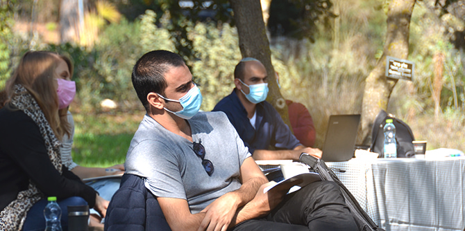
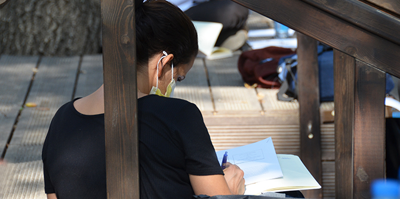

העבודה עם עמיתי הקבוצה, המגיעים מרקע מגוון, מטפחת כר פורה לבניית מנהיגות המובילה תהליך יצירה של שפה משותפת ואקלים שיש בהם כדי לקדם את היכולת לנהל חיים משותפים וערכיים בישראל, בדגש על ערכי צדק, לכידות חברתית ושוויון הזדמנויות.
התוכנית פועלת לסייע בגיבוש זהותם החינוכית של העמיתים, העמקת הידע העיוני והפרקטי הרלוונטי לעבודתם, הרחבת היכרותם עם המציאות החינוכית בארץ ובעולם ופיתוח יכולותיהם לתרגום תפיסות חינוכיות לכדי מעשה. התוכנית משמשת פלטפורמה לעיון משותף בסוגיות יסוד המעסיקות את החינוך והחברה בישראל, ולדיון באתגרים הניצבים בפני מסגרות החינוך הבלתי פורמלי על רקע המציאות החברתית והתרבותית בארץ ובעולם.

סדרת מפגשי הפתיחה של התוכנית עוסקת בהיבטים האידאולוגיים של החינוך ובניתוח מרכיביו של החזון החינוכי ככלי מרכזי בעיצובו של המעשה החינוכי והנעת שינויים חברתיים. בהנחיית צוות התוכנית, העמיתים מעמיקים בבירור שאלות על טיב דמותו של האדם הראוי והחברה הראויה, כפי שהיא משתקפת מן החזונות של הארגונים החינוכיים שבהם הם פועלים. מטרה נוספת היא לחשוף את העמיתים לחזונות חינוכיים מגוונים ולפתח את תפיסת החזון האישית שלהם.
מפגשים אלו מבקשים לחשוף את העמיתים למושגי יסוד בחינוך ולבחון אותם אל מול עשייתם החינוכית. במהלך המפגשים העמיתים בוחנים את המתח שבין התאוריה למעשה החינוכי בהקשרים ספציפיים, את מסגרות החינוך המרכזיות בחברה הישראלית והקשרים הקיימים בין הזרמים השונים, וכן את האתגרים שעמם מתמודדת כל מסגרת חינוכית.
אחד המרצים בסדרת מפגשי הפתיחה היה
פרופ' יורם הרפז, בוגר בית ספר מנדל למנהיגות חינוכית ובעברו מנהל מכון מנדל למנהיגות. הרצאותיו של הרפז עסקו במהות החשיבה והעשייה החינוכית, ולטענתו, חשיבה ועשייה פדגוגית-אסטרטגית נעשות בשישה צעדים שעיקרם המצאת מטרת החינוך והתאמת האמצעים להשגתה. בהציגו את הטיפולוגיה של צבי לם אודות שלוש אידיאולוגיות-העל בחינוך, טען הרפז לעקרון "הבחירה הטראגית" הקיימת במעשה החינוכי, ההכרח לבחור בין החינוך הערכי כמוטיב מרכזי, החינוך להגשמה עצמית או החינוך כשיטה להענקת כלים. הסיבה בגינה אנשי חינוך נוטים לנסות להגשים את כל המטרות, שבחלקן הן מטרות סותרות, נובעת מתוך הסנטימנט החינוכי של המחנכים המבקשים להגביר את השפעתם על חניכיהם-תלמידיהם.

מרכיב מרכזי וייחודי של התוכנית בעבודה עם העמיתים ברמה האישית והקבוצתית הוא יצירת מרחב לימודי ורגשי מיטבי ללמידה – מרחב הנבנה עם העמיתים במפגשי הלמידה עצמם ובין המפגשים. מרחב זה פועל מתוך הנחת היסוד שמדובר ברכיב חיוני בתהליך הלמידה, ההעמקה וההתפתחות האישית של העמיתים. ואכן, במהלך ימי הלימוד הראשונים מוקדש זמן ייחודי לבנייתה של קבוצת עמיתים מגובשת, הכוללת 25 בעלי תפקידים בכירים בארגוני החינוך הבלתי-פורמלי השונים בארץ: קבוצה מגוונת מבחינה דתית, תרבותית, ארגונית ואידאולוגית.
התוכנית מבקשת אפוא לפתח קהילה מגוונת של מנהיגות ומנהיגים בחינוך הבלתי-פורמלי, אנשי חינוך בעלי תחושת שליחות וחזון בהיר, בעלי הרצון והכוח לפעול מתוך היכרות רחבה וידע מעמיק בשדות החינוך והחברה, אשר יש להם מחויבות לפעולה אפקטיבית בתחומי הלכידות החברתית ושוויון ההזדמנויות, ורואים בשונות ובגיוון נכס המקדם את החיים בחברה בישראל.
{kind=link}
{kind=link}